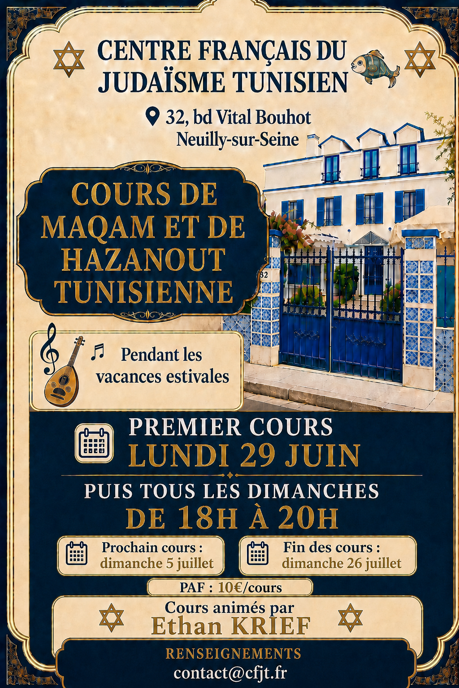

Centre Français du Judaïsme Tunisien
Transmettre les mélodies,
préserver la tradition.
Retrouvez les enregistrements, supports, partitions et souvenirs de chaque cours de maqâm et de hazanout tunisienne animé par Ethan Krief.

Une tradition vivanteChants, modes, prières et transmission orale
Des archives accessiblesAudio, vidéo, images et documents réunis par séance
Archives du cours
Les séances
Aucun contenu n’est disponible pour ce filtre.
À propos
Un espace de mémoire et d’apprentissage
Ce site rassemble progressivement les cours du CFJT autour des maqâms, de la hazanout tunisienne et du patrimoine musical judéo-tunisien. Chaque séance peut contenir un résumé, des extraits audio, une vidéo, des photographies, une partition ou des documents complémentaires.
Écrire au CFJT →
“
La mélodie est une chose grande et profondément élevée ; elle possède le pouvoir d’éveiller et d’attirer le cœur de l’homme vers Dieu. — Rabbi Nahman de Breslev, Si’hot Haran, §273